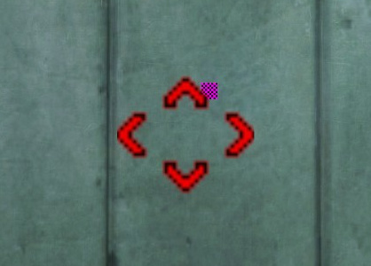

Try removing trigger_autosave from the maps.
Double-checked and I have indeed done that; however the game also autosaves on its own when the player goes through a level transition.
Okay another door bug, but this one is a weird one even for me.
And is likely part of the pre-existing bug you explained earlier, however, its possible to majorly bug out the double vault doors before the main chamber door by going near them during the 2 scientist speaches… the result is them constantly going up and down, and it does actually make exiting and entering the test chamber a lot harder than normal.

In pd_c1a0a, in the lab right before the area 3 checkpoint, on the wall where you find the “TYPES OF MASS SPECTROMETRY” poster:

getpos
setpos -1015.693787 2893.920898 384.031250;setang -2.177996 -133.971146 0.000000
I should have said yes a long time ago, but yeah I would like to see one, along with a Pre-Disaster Scripting tutorial (There’s not that many good, indepth scripted_sequence tutorials in general, but that’s a different issue). It’s the only really important thing I still have to do, (other than lighting, I’m fearing that), so I put the whole thing on hold. School right now is just driving me into the ground, sucking up most of my free time.
1 Like
Looks great, here are few minor things I have found:
The flashlight somehow does not work, not even sound is played if switched.
Not sure if it is intensional, but crystal disappeared after AMS test.
When walking near “Laser Caution” the lighting gets noticeably darker (not sure if HDR)

The green line is not aligned with other behind corner

Any FOV lower than 90 will crop these document screen overlays.

I haven’t looked in orig. BM map, but here the locker doors have different color tint compared to adjacent wall.

Going to sector B corridor disconnects from map.
Not sure if these ones can be fixed easily, hope it helped to hunt some of the bugs.
I had never heard of a Pre-Disaster project before, this is amazing. I’ve always liked the idea of expanding the game surface, because having so many locked doors is frustrating and somewhat unrealistic!
Is this project supposed to fit in the rest of Black Mesa (so we can cause the disaster at some point and play the rest of the game), or is it a separate mod?
About Gordon not just pushing samples into the AMS: is it possible to create some sort of more complex procedure to make the AMS work? So the job is not just pressing one on/off button and then pushing the sample, but also pressing more buttons, using valves or wheels, connecting stuff, etc. Something similar to the final chapter of Blue Shift, for example. Just an idea 
Anyway, thank you for your work!
I want to talk about zombies in Half-life 1 Zombie have are more motion than black mesa it would be awesome if someone reanimation zombie and bring old motion becouse hl1 zombies walking and atack motion look creepy. This is are sreenshot from garys mod and look prety good. Hl1 zombie body looks creepy have longer claws and big teeth in uper body i remeber whan play hl 1 zombie uper body teeth have are motion becouse ,headcrab eat all meat from head only left skull and on the hand blood.

Here is hl1 zombie detail how look Zombie_render|240x240 interestic fact that no ones not even try to make black mesa zombie like hl1 and how would it look if try to make like this creenshot i think its are good idea and sory for my bad english. I hope someone try to gone work on this people would love is someone bring old hl1 zombie .
{kind=link}